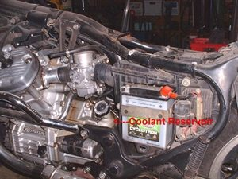

Home mechanic (basic tools) · Time: 45 to 90 min (estimate) (estimate)
Coolant loses its protection with age. The inhibitors that stop rust and scale wear out, and the mixture can pick up dirt or oil. Old coolant blocks the radiator and corrodes the water pump. Replace it at the interval in your manual, after a leak repair, or when the coolant looks rusty or dirty. The exact drain points, quantity and bleeding (air removal) method vary by model, so have the manual open.
Safety
- Engine and radiator must be cold. Never open the radiator cap hot.
- Coolant is poisonous and sweet tasting. Catch all of it and take it to a collection point. Do not pour it on the ground.
- Wipe any coolant off the tyres and brakes.
You need
- The coolant type and quantity from your manual.
- A new sealing washer for the drain bolt.
Steps
- Put the bike upright on level ground with a tray under the water pump drain bolt (often on the pump cover low on the engine).
- Remove any body panels needed to reach the radiator cap and reserve tank.
- Slowly remove the radiator cap.
- Remove the drain bolt. Coolant will flow out; let it drain fully. Tilt the bike gently upright if your manual says.
- Empty the reserve tank. Some must be removed; others have a drain hose.
- If the old coolant was dirty, flush with clean distilled water: refit the drain bolt, fill, run briefly, cool, drain again.
- Fit the drain bolt with a new washer and tighten to the manual value.
- Fill the radiator slowly through the filler until full. Fill the reserve tank to the UPPER mark.
- Bleed the air: many bikes need the engine run at idle with the radiator cap off while you watch for bubbles, gently squeezing the hoses; others have a bleed screw. Follow the manual. Top up as the level falls.
- Refit the radiator cap firmly. Run until the fan switches on, then stop and let it cool fully.
- Check the reserve tank level when cold and top up to UPPER.
Check your work
- No leak at the drain bolt or hoses.
- Temperature gauge rises to normal and stays there on a test ride; fan switches on in traffic.
- Level steady at the next cold check.
If it did not fix the problem
- Engine still overheats with no air bubbles: Test the radiator fan and its switch and Check the thermostat.
- Level falls again: Find a coolant leak.